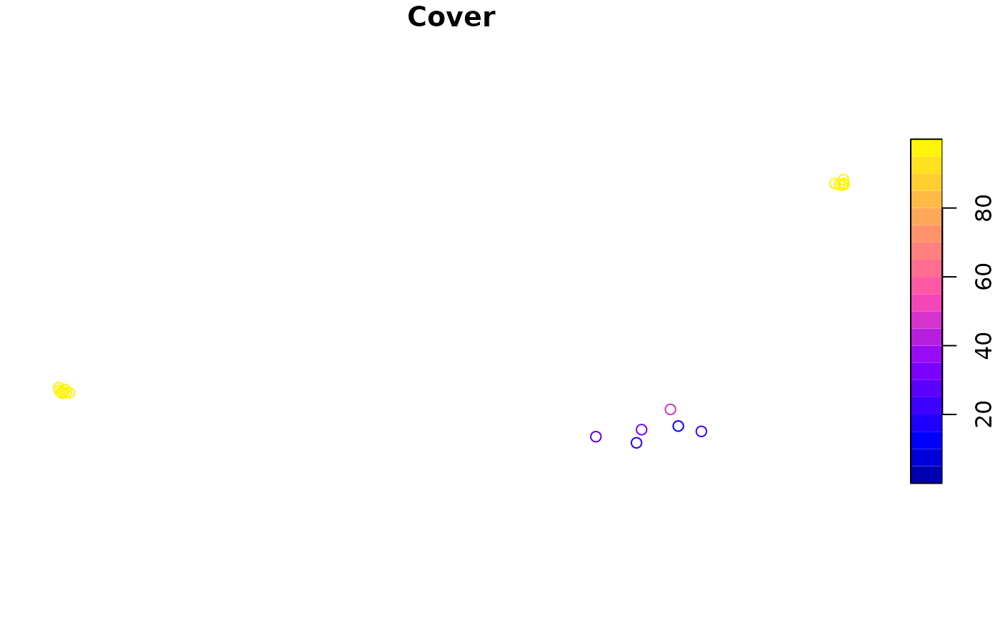

Using the safedata package
Andy Aldersley and David Orme
2022-08-01
Source:vignettes/using_safe_data.Rmd
using_safe_data.RmdThe safedata package makes it easy to search for and use datasets collected at the SAFE Project. It provides an interface to download data files and packaged record metadata and then functions to load data worksheets and add taxonomic and spatial data where available.
For further information on the publication and structure of data through the SAFE Project and within the safedata package, see the Overview vignette: vignette("overview", package = "safedata").
Installing safedata
The safedata package is available from CRAN:
install.packages("safedata")The development version can also be installed from GitHub:
devtools::install_github("ImperialCollegeLondon/safedata")Package dependencies
The safedata package requires the following packages:
-
readxl, to read data directly from Excel datasets, -
jsonlite,httrandcurl, to communicate with the SAFE API and to read downloaded JSON data, -
chron, to represent time of day data, -
igraph, to handle taxonomic data structures, and -
sf, to handle spatial data about sampling locations.
The SAFE data directory
The safedata package makes use of a local directory to store downloaded data, index and metadata files (vignette("overview", package = "safedata") for details) . These files are needed for the safedata functions to work correctly, so the first step in using safedata is to set the location of the directory and the package will remind you to do this when it is loaded.
Initialising a SAFE data directory
If this is the first time you are loading safedata – or if you simply want to have two separate SAFE data directories – then you need to create a new, empty directory.
set_safe_dir('my_safe_directory', create=TRUE)
## Safe data directory createdThis will create the directory and download the current index files. You cannot use an existing directory: the package wants to start with a fresh, empty directory. Note that the directory path is stored in options():
getOption('safedata.dir')
## [1] "my_safe_directory"Using an existing SAFE data directory
Once you have a SAFE data directory, the same function is used to tell the safedata package where to look for index and data files:
set_safe_dir('my_safe_directory')
## Checking for updates
## - Index up to date
## - Gazetteer up to date
## - Location aliases up to date
## Validating directoryYou will see that this function checks with the SAFE Project website for updates to the key index files. This can be turned off for offline use (set_safe_dir('~/my_safe_directory', update=FALSE)). The function also validates local data files: it checks the MD5 hash of local data file copies against the MD5 of the published file.
The rest of this vignette uses an example SAFE data directory that is included within the package. This is set up for use using the following command but note that this is a temporary data folder and is only used for demonstration purposes.
#> Loading and caching index#> Validating directoryFinding data
You can browse datasets published by the SAFE Project at either:
- our SAFE Zenodo community or
- the SAFE Project website.
If you have done this, or have a dataset DOI from another source, then you can look up the dataset directly.
However, if you want to search the dataset metadata or the taxa and locations covered by datasets then there are a set of search functions built into the safedata package.
Search functions
The safedata package contains a set of search functions to explore datasets. These functions make use of a metadata index stored on the SAFE Project website and so need an internet connection to work. These search functions provide structured access to the same metadata shown in project description text but also provide extended taxonomic and spatial searches.
The functions are:
-
search_text(): free text search of dataset and worksheet titles and descriptions. -
search_fields(): searches worksheet field names and descriptions and field types. -
search_authors(): searches dataset authors -
search_dates(): searches for overlap with the start and end date of a dataset. -
search_taxa(): searches for datasets containing particular taxa. -
search_spatial(): searches for datasets sampling at or near a particular location.
All of these functions return a safe_record_set objects, which is just a data frame containing validated record ids and access information and so you can use the normal data frame indices (e.g. recs[1,]) to select particular records.
soil_datasets <- search_text('soil')
print(soil_datasets)
#> Set includes 22 concept ids and 28 record ids:
#> - 21 open and most recent (*)
#> - 6 open and outdated (o)
#> - 1 under embargo or restricted (x)
#>
#> concept record available
#> 1 1198564 3857210 *
#> 2 3247591 3247592 *
#> 3 3251886 3258079 *
#> 4 ------- 3251887 o
#> 5 3251899 3258117 *
#> 6 ------- 3251900 o
#> 7 3251901 3897394 *
#> 8 ------- 3614876 o
#> 9 ------- 3258082 o
#> 10 ------- 3251902 o
#> 11 3265745 3265746 *
#> 12 3266770 4542881 *
#> 13 ------- 3266771 o
#> 14 3266821 3266822 *
#> 15 3354067 3354068 *
#> 16 3402745 3402746 *
#> 17 3698114 3698115 *
#> 18 3888374 3888375 *
#> 19 3897376 3897377 *
#> 20 3929631 3929632 *
#> 21 3979295 3979296 *
#> 22 4297672 4297673 x
#> 23 4630979 4630980 *
#> 24 4899609 4899610 *
#> 25 5113428 5113429 *
#> 26 5113430 5113431 *
#> 27 5519571 5519572 *
#> 28 5562259 5562260 *Taxon search details
Published datasets contain a taxonomic index of any organisms referred to within the data - see here for details of the Taxa worksheet containing the index.
The taxa in this index, along with all of the parent taxa in the taxonomic hierarchy leading up to that those taxa, are added to a taxonomic database on the SAFE Project website. The search_taxa() function searches that index to identify all the datasets that contain a particular taxon.
ants <- search_taxa('Formicidae')
print(ants)
#> Set includes 16 concept ids and 17 record ids:
#> - 14 open and most recent (*)
#> - 1 open and outdated (o)
#> - 2 under embargo or restricted (x)
#>
#> concept record available
#> 1 1198301 1198302 *
#> 2 1198471 1237732 *
#> 3 1198838 1198839 *
#> 4 1237729 1237730 x
#> 5 1400561 1400562 *
#> 6 1995247 1995439 *
#> 7 2537072 3901735 *
#> 8 3247484 3876227 *
#> 9 ------- 3247485 o
#> 10 3265745 3265746 *
#> 11 3354067 3354068 *
#> 12 3975972 3975973 *
#> 13 3979295 3979296 *
#> 14 4297672 4297673 x
#> 15 4630979 4630980 *
#> 16 5113428 5113429 *
#> 17 5562259 5562260 *The taxonomic index is built around the GBIF backbone taxonomic database and include the following core taxonomic levels: kingdom, phylum, class, order, family, genus, species and subspecies. It is also possible to search by GBIF ID.
ants <- search_taxa(gbif_id=4342)Spatial search details
Datasets also have to provide a full index of sampling locations used in the data. Sampling locations are either linked to existing sampling locations included in the SAFE gazetteer or users can identify new sampling locations and provide location data if possible.
The search_spatial() function allows users to search for datasets by sampling locations. Accepted location names from the gazetteer can be used to search for datasets but users can also provide their own search geometries using the Well Known Text format. The search includes simple GIS capabilities to look for sampling within a given distance of the query location.
# Datasets that include sampling within experimental block A
within_a <- search_spatial(location='BL_A')
# Datasets that sampled within 2 km of the Maliau Basin Field Study Centre
near_maliau <- search_spatial(wkt='POINT(116.97394 4.73481)', distance=2000)Note that WKT coordinates should be supplied as WGS84 longitude and latitude - typically the output of GPS receivers - but the database uses the local UTM 50N projected coordinate system for all distance calculations and GIS operations.
Combining searches
It is possible to combine searches using logical operators (& and |), which simply find the intersection and unions of sets of SAFE records.
# Three searches
fish <- search_taxa("Actinopterygii")
odonates <- search_taxa("Odonata")
ewers <- search_authors("Ewers")
# Logical combinations
aquatic <- fish | odonates
aquatic_ewers <- aquatic & ewers
all_in_one <- (fish | odonates) & ewersAnother approach is to restrict the records that will be searched in the online database. You can pass a search result into a second search result to only search within those records. This cuts down on the amount of information that has to be retrieved from the server, so might be faster on poor networks. However, this obviously only works for repeated narrowing of a search, so has less functionality.
fish <- search_taxa("Actinopterygii")
ewers <- search_authors("Ewers", ids=fish)Look up a specific dataset
Datasets are identified by their record number, which is the number included in both the dataset DOI and Zenodo URL. All of the following point to the same dataset:
Note that all metadata is available for all records, regardless of whether they are open, embargoed or restricted. This includes field descriptions and taxon and location sampling so that users can assess whether a dataset is going to be useful even if it is not yet openly available.
Once you have the details of a dataset you are interestested in then you can validate a dataset reference to access metadata and available data, using the validate_record_ids() function. This function does the following:
- checks that the record is valid,
- checks whether the record number is a record id, referring to a specific version of a dataset, or a concept id, which identifies all the versions of a dataset. In the example code below, two of the values are record ids, so the appropriate concept id is located and printed, and one is a concept id, so no specific version number is given.
- checks whether the data are currently available, and
- provides an interface to download and import the related data files.
Like the search functions, the output is safe_record_set object. Note that you can validate multiple references at once.
recs <- validate_record_ids(c('https://doi.org/10.5281/zenodo.3247631',
'10.5281/zenodo.3266827',
'https://zenodo.org/record/3266821'))
print(recs)#> Set includes 3 concept ids and 2 record ids:
#> - 2 open and most recent (*)
#> - 0 open and outdated (o)
#> - 0 under embargo or restricted (x)
#>
#> concept record available
#> 1 3247630 3247631 *
#> 2 3266821 -------
#> 3 3266826 3266827 *In addition, all of the main functions in safedata that expect to be passed a dataset id will run validate_record_ids() on their inputs, so you can simply use those URLs directly with those functions without needing to specifically create a safe_record_set yourself.
Displaying dataset metadata
Printing a safe_record_set object displays a deliberately compact summary of a set of record ids. There are three function that show the detailed metadata for records at three levels:
- the concept level: metadata about all the published versions of a particualar dataset,
- the record level: metadata about a specific version of a dataset, and
- the worksheet level: metadata about the fields available in a particular data worksheet.
show_concepts()
The show_concepts() function displays concept level metadata about a set of record ids. This includes the (most recent) dataset title and a short summary of the versions available under the dataset concept. Note that the output is not restricted just to the set of record ids given to the function: it shows metadata for all versions for each of the concept ids included.
show_concepts(recs)#>
#> Concept ID: 3247630
#> Title: Functional traits of tree species in old-growth and selectively logged forest
#> Versions: 1 available, 0 embargoed or restricted
#>
#> record_id published embargo available
#> 3247631 2019-06-17 -- *
#>
#> -------------
#>
#> Concept ID: 3266821
#> Title: Microclimate proxy measurements from a logging gradient in Malaysian Borneo (BALI project)
#> Versions: 1 available, 0 embargoed or restricted
#>
#> record_id published embargo available
#> 3266822 2019-07-03 -- *
#>
#> -------------
#>
#> Concept ID: 3266826
#> Title: Quantifying the spatial heterogeneity of forest conversion costs and how it relates to biodiversity, conservation and land use history
#> Versions: 1 available, 0 embargoed or restricted
#>
#> record_id published embargo available
#> 3266827 2019-07-03 -- *
show_record()
This function shows metadata for a specific version of a dataset: if you give it a concept ID then it will display the available versions for that concept. Otherwise, the function prints out information about the dataset with that record id: it includes the dataset title, status and other dataset level metadata and then a summary of the data worksheets contained in the dataset.
Note that - because a safe_record_set is just a data frame with some extra information attached - you can use the usual data frame indexing to select a row to pass to other functions. Running show_record() also requires an internet connection when a record is first examined: the package downloads a JSON file of the record metadata and stores it in the SAFE data directory.
show_record(1400562)#>
#> Record summary
#> Title: Myrmecophilous Pselaphine beetles in tropical forests
#> Authors: Psomas
#> Publication date: 2018-08-20
#> Record ID: 1400562
#> Concept ID: 1400561
#> Status: open
#> Taxa: 67 taxa reported
#> Locations: 20 locations reported
#>
#> Data worksheets:
#> name ncol nrow description
#> EnvironVariables 5 20 Environmental variables
#> Ant-Psel 4 20 Ant-Pselaphine data
#> MorphAbundance 44 20 Morphospeices abundance
#> MorphFunctTraits 18 42 Morphospecies_Functional Traits
show_worksheet()
This function shows metadata for a named worksheet within a specific record. The default is to show a compact table of field names, field types and truncated descriptions:
show_worksheet(1400562, 'EnvironVariables')#> Record ID: 1400562
#> Worksheet name: EnvironVariables
#> Number of data rows: 20
#> Number of data fields: 4
#> Description:
#> Environmental variables
#> Status: open
#>
#> Fields:
#> field_name field_type description
#> 1 Site Location Site of measurements
#> 2 Temp Numeric Soil temperature
#> 3 Moisture Numeric Soil moisture
#> 4 Cover Numeric Canopy coverThere is also an extended display (extended_fields=TRUE) that will print out a list of all the available metadata for each field.
show_worksheet(1400562, 'EnvironVariables', extended_fields=TRUE)#> Record ID: 1400562
#> Worksheet name: EnvironVariables
#> Number of data rows: 20
#> Number of data fields: 4
#> Description:
#> Environmental variables
#> Status: open
#>
#> Fields:
#> Site :
#> - field_type: Location
#> - description: Site of measurements
#> - method: NA
#> Temp :
#> - field_type: Numeric
...Downloading data
Once you have found records for which you want to explore the actual data, then you first need to download the data files for the dataset from Zenodo. This uses the download_safe_files() function and you can either give that a URL or number for a dataset or pass it an existing safe_record_set. The function will check which datasets are currently available and download them to the SAFE data directory. The default behaviour is to present a brief report on the number and size of available files to be downloaded before actually doing anything:
download_safe_files(within_a)
## 26 files requested from 26 records
## - 0 local (0 bytes)
## - 4 embargoed or restricted (2.2 Mb)
## - 22 to download (43.6 Mb)
##
## 1: Yes
## 2: No
##
## Selection:By default, the download_safe_files() function downloads all of the files associated with the record. This will include external data files which may contain primary data that is not suited to the Excel format or additional information. Although many external files are likely to be readable in R, thesafedata does not currently provide a mechanism to load them automatically. The function will also download the JSON metadata for the specified datasets.
download_safe_files(3697804, xlsx_only=FALSE)
# 2 files requested from 1 records
# - 1 local (11.3 Kb)
# - 0 embargoed or restricted (0 bytes)
# - 1 to download (74.1 Kb)
#
# 1: Yes
# 2: No
#
# Selection: 1
# 2 files for record 3697804: 1 to download
# - Downloaded: Sampling_area_borders.xlsx,
# - Downloaded: Sampling_area_borders_UTM50N_WGS84.zipThe function will warn you if the local copies of data files have been altered and the refresh=TRUE argument can be used to restore data files to the version of record. Note that this will delete local changes.
Loading data
The load_safe_data() function is used to load a named data worksheet from a dataset into a safedata object. This is just a data frame with some additional attribute data and it will in general behave just like any other data frame - the additional attributes are used for further data processing and adding brief metadata to the str and print methods.
Some data formatting takes place based on field types: categorical variables are converted to factors; dates and datetimes are converted to POSIXct and times are converted to chron::time objects.
beetle_abund <- load_safe_data(1400562, 'Ant-Psel')
str(beetle_abund)#> SAFE dataset
#> Concept: 1400561; Record 1400562; Worksheet: Ant-Psel
#> 'data.frame': 20 obs. of 3 variables:
#> $ Site : chr "SAFE_E" "SAFE_D" "SAFE_F" "SAFE_C" ...
#> $ ant.species.richness: num 31 31 27 29 31 21 31 25 32 26 ...
#> $ ant.abundance : num 561 713 392 481 1036 ...
print(beetle_abund)#> SAFE dataset:
#> Concept: 1400561; Record 1400562; Worksheet: Ant-Psel
#> First 10 rows:
#> Site ant.species.richness ant.abundance
#> 1 SAFE_E 31 561
#> 2 SAFE_D 31 713
#> 3 SAFE_F 27 392
#> 4 SAFE_C 29 481
#> 5 SAFE_B 31 1036
#> 6 SAFE_A 21 272
#> 7 Maliau_1 31 1889
#> 8 Maliau_2 25 409
#> 9 Maliau_3 32 613
#> 10 Maliau_4 26 1036The display of safedata objects is kept deliberately simple to avoid cluttering the screen with metadata. You can always view additional metadata for a loaded worksheet by using the show functions directly on the loaded safedata object:
show_concepts(beetle_abund)#>
#> Concept ID: 1400561
#> Title: Myrmecophilous Pselaphine beetles in tropical forests
#> Versions: 1 available, 0 embargoed or restricted
#>
#> record_id published embargo available
#> 1400562 2018-08-20 -- *
show_record(beetle_abund)#>
#> Record summary
#> Title: Myrmecophilous Pselaphine beetles in tropical forests
#> Authors: Psomas
#> Publication date: 2018-08-20
#> Record ID: 1400562
#> Concept ID: 1400561
#> Status: open
#> Taxa: 67 taxa reported
#> Locations: 20 locations reported
#>
#> Data worksheets:
#> name ncol nrow description
#> EnvironVariables 5 20 Environmental variables
#> Ant-Psel 4 20 Ant-Pselaphine data
#> MorphAbundance 44 20 Morphospeices abundance
#> MorphFunctTraits 18 42 Morphospecies_Functional Traits
show_worksheet(beetle_abund)#> Record ID: 1400562
#> Worksheet name: Ant-Psel
#> Number of data rows: 20
#> Number of data fields: 3
#> Description:
#> Ant-Pselaphine data
#> Status: open
#>
#> Fields:
#> field_name field_type description
#> 1 Site Location Site where sample was collected
#> 2 ant species richness Numeric Number of ant species in sample
#> 3 ant abundance Abundance Total number of ants in sampleDataset taxa
There are a number of functions that can be used to work with the taxa in a dataset. Some generate simple tables of taxa:
-
get_taxa(): This function loads a dataframe containing all of the taxa used within a dataset, with fields including the core GBIF taxonomic levels, the taxonomic label used within the dataset and the taxonomic status of the each taxon. You can load a taxonomic dataframe from asafe_record_setrow or using an existing loadedsafedataobject.#> Classes 'safe_taxa' and 'data.frame': 43 obs. of 13 variables: #> $ kingdom : chr "Animalia" "Animalia" "Animalia" "Animalia" ... #> $ phylum : chr "Arthropoda" "Arthropoda" "Arthropoda" "Arthropoda" ... #> $ class : chr "Insecta" "Insecta" "Insecta" "Insecta" ... #> $ order : chr "Coleoptera" "Coleoptera" "Coleoptera" "Coleoptera" ... #> $ family : chr "Pselaphidae" "Pselaphidae" "Staphylinidae" "Staphylinidae" ... #> $ genus : chr NA NA "Mnia" "Aphilia" ... #> $ species : chr NA NA NA NA ... #> $ subspecies : chr NA NA NA NA ... #> $ variety : chr NA NA NA NA ... #> $ form : chr NA NA NA NA ... #> $ taxon_name : chr "Psel1" "Psel10" "Psel11" "Psel12" ... #> $ taxon_level: chr "morphospecies" "morphospecies" "morphospecies" "morphospecies" ... #> $ gbif_status: chr "user" "user" "user" "user" ... -
add_taxa(): This function adds taxonomic details to an already loaded data worksheet.beetle_morph <- load_safe_data(1400562, 'MorphFunctTraits') beetle_morph <- add_taxa(beetle_morph) str(beetle_morph)#> SAFE dataset #> Concept: 1400561; Record 1400562; Worksheet: MorphFunctTraits #> 'data.frame': 42 obs. of 30 variables: #> $ Morphospecies: chr "Psel1" "Psel2" "Psel3" "Psel4" ... #> $ AL : num 0.663 0.702 0.702 1.599 1.131 ... #> $ TAL : num 0.117 0.039 0.39 0.234 0.234 0.273 0.078 0.351 0.117 0.156 ... #> $ TAW : num 0.117 0.039 0.195 0.117 0.234 0.234 0.078 0.234 0.078 0.078 ... #> $ AN : num 11 11 7 11 11 7 11 7 11 11 ... #> $ HCA : Factor w/ 2 levels "absent","present": 2 2 2 2 1 1 2 1 2 2 ... #> $ HCP : Factor w/ 2 levels "absent","present": 1 1 1 1 2 2 1 2 1 1 ... #> $ TA : Factor w/ 2 levels "absent","present": 2 2 2 2 1 1 2 2 2 2 ... #> $ TP : Factor w/ 2 levels "absent","present": 1 1 1 1 2 2 1 1 1 1 ... #> $ FP : Factor w/ 2 levels "absent","present": 1 2 2 2 2 2 2 2 2 2 ... #> $ FA : Factor w/ 2 levels "absent","present": 2 1 1 1 1 1 1 1 1 1 ... #> $ Bef2 : Factor w/ 2 levels "absent","present": 2 1 1 1 2 1 2 1 2 2 ... #> $ Bef3 : Factor w/ 2 levels "absent","present": 1 2 1 1 1 1 1 1 1 1 ... #> $ Bef1 : Factor w/ 2 levels "absent","present": 1 1 2 2 1 2 1 2 1 1 ... #> $ Bef0 : Factor w/ 2 levels "absent","present": 1 1 1 1 1 1 1 1 1 1 ... #> $ Bef4 : Factor w/ 2 levels "absent","present": 1 1 1 1 1 1 1 1 1 1 ... #> $ Myrmycophile : Factor w/ 4 levels "Facultative",..: NA 2 1 1 4 1 2 1 NA NA ... #> $ kingdom : chr "Animalia" "Animalia" "Animalia" "Animalia" ... #> $ phylum : chr "Arthropoda" "Arthropoda" "Arthropoda" "Arthropoda" ... #> $ class : chr "Insecta" "Insecta" "Insecta" "Insecta" ... #> $ order : chr "Coleoptera" "Coleoptera" "Coleoptera" "Coleoptera" ... #> $ family : chr "Pselaphidae" "Staphylinidae" "Staphylinidae" "Staphylinidae" ... #> $ genus : chr NA "Bibloporus" "Plagiophorus" "Harmophorus" ... #> $ species : chr NA NA NA NA ... #> $ subspecies : chr NA NA NA NA ... #> $ variety : chr NA NA NA NA ... #> $ form : chr NA NA NA NA ... #> $ taxon_name : chr "Psel1" "Psel2" "Psel3" "Psel4" ... #> $ taxon_level : chr "morphospecies" "morphospecies" "morphospecies" "morphospecies" ... #> $ gbif_status : chr "user" "user" "user" "user" ... -
The
get_taxon_coveragefunction can be used to get a taxon table of all taxa currently referenced in all datasets.all_taxa <- get_taxon_coverage()str(all_taxa)#> Classes 'safe_taxa' and 'data.frame': 7058 obs. of 13 variables: #> $ kingdom : chr "Plantae" "Plantae" "Animalia" "Animalia" ... #> $ phylum : chr "Tracheophyta" "Tracheophyta" "Chordata" "Chordata" ... #> $ class : chr "Magnoliopsida" "Magnoliopsida" "Aves" "Aves" ... #> $ order : chr "Ericales" "Lamiales" "Columbiformes" "Passeriformes" ... #> $ family : chr "Pentaphylacaceae" "Lamiaceae" "Columbidae" "Nectariniidae" ... #> $ genus : chr NA "Congea" "Chalcophaps" "Kurochkinegramma" ... #> $ species : chr NA NA NA "Kurochkinegramma hypogrammicum" ... #> $ subspecies : chr NA NA NA NA ... #> $ variety : chr NA NA NA NA ... #> $ form : chr NA NA NA NA ... #> $ taxon_name : chr "Pentaphylacaceae" "Congea" "Chalcophaps" "Kurochkinegramma hypogrammicum" ... #> $ taxon_level: chr "family" "genus" "genus" "species" ... #> $ gbif_status: chr "accepted" "accepted" "accepted" "accepted" ...
The other functions convert taxon tables into graphs (vertices and edges) and phylogenetic trees using the GBIF taxonomic backbone to represent phylogeny. The data validation should ensure that the taxa in a dataset can be connected as a phylogenetic tree, but this isn’t always the case. For this reason, these functions use a more general graph conversion and then checks whether the result can be converted to a phlyogenetic tree. Technically, that is checking that the graph is a connected, simple, directed acyclic graph.
The
get_taxon_graphfunction converts a taxon table to a graph. The function also does some extra validation, and will give warnings when the taxon table has to be adjusted to represent the taxonomic hierarchy and worksheet taxa properly. The result is an object of classigraphand the vertices have attributes containing the original table data.The
igraph_to_phylofunction tests whether a taxon graph can be converted to a phylogeny and returns aphyloobject (packageape). The tips and internal nodes are labelled with taxon names but thephylostructure does not store other node information.-
get_phylogeny(): This is simply a wrapper that runs both functions above in turn to go straight to a phylogeny.library(ape) beetle_phylo <- get_phylogeny(1400562) plot(beetle_phylo, show.node.label=TRUE, font=1, no.margin=TRUE)
Dataset locations
Nearly all SAFE datasets will include observations at spatial locations, and these datasets must include a Locations worksheet used as an spatial index for research activities. There are three functions that can be used to work with locations in a dataset. All of these functions use the sf package to represent the GIS geometry of locations and which provides an extensive toolset for further spatial analysis.
-
load_gazetteer(): The gazetteer is one of the three key index files saved in the SAFE data directory and updated whenset_safe_dir()is run. It includes sampling locations drawn from across a wide range of projects running at SAFE and is intended to hold all locations that are likely to see repeated sampling. Locations included the gazetteer can be used directly as known locations in datasets, although data providers can also include new locations.gazetteer <- load_gazetteer() print(gazetteer)#> Simple feature collection with 5171 features and 15 fields #> Geometry type: GEOMETRY #> Dimension: XY #> Bounding box: xmin: 116.9471 ymin: 4.41215 xmax: 117.9959 ymax: 4.961828 #> Geodetic CRS: WGS 84 #> First 10 features: #> location type plot_size display_order parent region #> 1 SAFE_camp SAFE basecamp <NA> 3 <NA> SAFE #> 2 Flux_tower Flux tower <NA> 7 <NA> SAFE #> 3 A_1 SAFE Sampling point 25m x 25m 7 <NA> SAFE #> 4 A_2 SAFE Sampling point 25m x 25m 7 <NA> SAFE #> 5 A_3 SAFE Sampling point 25m x 25m 7 <NA> SAFE #> 6 A_4 SAFE Sampling point 25m x 25m 7 <NA> SAFE #> 7 A_5 SAFE Sampling point 25m x 25m 7 <NA> SAFE #> 8 A_6 SAFE Sampling point 25m x 25m 7 <NA> SAFE #> 9 A_7 SAFE Sampling point 25m x 25m 7 <NA> SAFE #> 10 A_8 SAFE Sampling point 25m x 25m 7 <NA> SAFE #> fractal_order transect_order centroid_x centroid_y #> 1 NA NA 117.6009 4.723797 #> 2 NA NA 117.6032 4.717283 #> 3 1 1 117.6515 4.708505 #> 4 1 1 117.6511 4.708578 #> 5 1 1 117.6514 4.708950 #> 6 1 2 117.6524 4.709513 #> 7 1 2 117.6520 4.709589 #> 8 1 2 117.6523 4.709968 #> 9 1 3 117.6538 4.711672 #> 10 1 3 117.6542 4.711600 #> source bbox_xmin bbox_ymin bbox_xmax #> 1 Safe_camp_multi.shp 117.6001 4.723253 117.6016 #> 2 GPS data 117.6032 4.717283 117.6032 #> 3 SAFE_core_sampling_stations_WGS84.shp 117.6515 4.708505 117.6515 #> 4 SAFE_core_sampling_stations_WGS84.shp 117.6511 4.708578 117.6511 #> 5 SAFE_core_sampling_stations_WGS84.shp 117.6514 4.708950 117.6514 #> 6 SAFE_core_sampling_stations_WGS84.shp 117.6524 4.709513 117.6524 #> 7 SAFE_core_sampling_stations_WGS84.shp 117.6520 4.709589 117.6520 #> 8 SAFE_core_sampling_stations_WGS84.shp 117.6523 4.709968 117.6523 #> 9 SAFE_core_sampling_stations_WGS84.shp 117.6538 4.711672 117.6538 #> 10 SAFE_core_sampling_stations_WGS84.shp 117.6542 4.711600 117.6542 #> bbox_ymax geometry #> 1 4.724475 MULTIPOLYGON (((117.6007 4.... #> 2 4.717283 POINT (117.6032 4.717283) #> 3 4.708505 POINT (117.6515 4.708505) #> 4 4.708578 POINT (117.6511 4.708578) #> 5 4.708950 POINT (117.6514 4.70895) #> 6 4.709513 POINT (117.6524 4.709513) #> 7 4.709589 POINT (117.652 4.709589) #> 8 4.709968 POINT (117.6523 4.709968) #> 9 4.711672 POINT (117.6538 4.711672) #> 10 4.711600 POINT (117.6542 4.7116) -
get_locations(): This function returns ansfobject containing the locations used within a dataset. For known locations, the GIS data for the location are taken directly from the gazetteer. If the locations are new sampling sites, then GIS data provided in the dataset is used. Note that it is possible for dataset providers to create a new locations without including GIS data - these will be represented using empty GIS geometries.By default, the returned
sfobject will only include the location name used in the dataset, the gazetteer name for known sampling sites and an indication of whether the location is new or known, butgazetteer_info=TRUEcan be used to include the gazetteer attributes for known locations.#> Linking to GEOS 3.8.0, GDAL 3.0.4, PROJ 6.3.1; sf_use_s2() is TRUEbeetle_locs <- get_locations(1400562) print(beetle_locs)#> Simple feature collection with 20 features and 3 fields #> Geometry type: POINT #> Dimension: XY #> Bounding box: xmin: 116.967 ymin: 4.69223 xmax: 117.7981 ymax: 4.97022 #> Geodetic CRS: WGS 84 #> First 10 features: #> gazetteer_name dataset_name new_location geometry #> Maliau_1 NA Maliau_1 TRUE POINT (116.9707 4.74462) #> Maliau_2 NA Maliau_2 TRUE POINT (116.9748 4.74548) #> Maliau_3 NA Maliau_3 TRUE POINT (116.9675 4.74757) #> Maliau_4 NA Maliau_4 TRUE POINT (116.9714 4.74565) #> Maliau_5 NA Maliau_5 TRUE POINT (116.9781 4.74501) #> Maliau_6 NA Maliau_6 TRUE POINT (116.9669 4.75054) #> Maliau_7 NA Maliau_7 TRUE POINT (116.9731 4.74864) #> Maliau_8 NA Maliau_8 TRUE POINT (116.9701 4.74607) #> Danum_1 NA Danum_1 TRUE POINT (117.796 4.96444) #> Danum_2 NA Danum_2 TRUE POINT (117.7932 4.96486)fragments <- subset(gazetteer, type=='SAFE forest fragment') par(mar=c(3,3,1,1)) plot(st_geometry(fragments), col='khaki', graticule=TRUE) plot(st_geometry(beetle_locs), add=TRUE, col='red', pch=4)
-
add_locations(): This functions adds location data to an already loaded worksheet. The result is asafedataobject that is also ansfobject.beetle_env <- load_safe_data(1400562, 'EnvironVariables') beetle_env <- add_locations(beetle_env) print(beetle_env)#> SAFE dataset: #> Concept: 1400561; Record 1400562; Worksheet: EnvironVariables #> Simple feature collection with 20 features and 7 fields #> Geometry type: POINT #> Dimension: XY #> Bounding box: xmin: 116.967 ymin: 4.69223 xmax: 117.7981 ymax: 4.97022 #> Geodetic CRS: WGS 84 #> First 10 features: #> Site Temp Moisture Cover gazetteer_name dataset_name #> SAFE_E SAFE_E 23.26667 40.73333 16 NA SAFE_E #> SAFE_D SAFE_D 23.76667 36.24000 32 NA SAFE_D #> SAFE_F SAFE_F 23.93333 26.71333 30 NA SAFE_F #> SAFE_C SAFE_C 22.80000 35.90667 15 NA SAFE_C #> SAFE_B SAFE_B 23.93333 20.96000 47 NA SAFE_B #> SAFE_A SAFE_A 23.73333 20.43333 23 NA SAFE_A #> Maliau_1 Maliau_1 24.10000 18.08000 100 NA Maliau_1 #> Maliau_2 Maliau_2 24.00000 27.59000 100 NA Maliau_2 #> Maliau_3 Maliau_3 24.43333 14.46000 100 NA Maliau_3 #> Maliau_4 Maliau_4 25.00000 15.68667 100 NA Maliau_4 #> new_location geometry #> SAFE_E TRUE POINT (117.5785 4.69223) #> SAFE_D TRUE POINT (117.5839 4.70618) #> SAFE_F TRUE POINT (117.5355 4.69872) #> SAFE_C TRUE POINT (117.6227 4.70994) #> SAFE_B TRUE POINT (117.6145 4.72757) #> SAFE_A TRUE POINT (117.6472 4.7043) #> Maliau_1 TRUE POINT (116.9707 4.74462) #> Maliau_2 TRUE POINT (116.9748 4.74548) #> Maliau_3 TRUE POINT (116.9675 4.74757) #> Maliau_4 TRUE POINT (116.9714 4.74565)
Inserting datasets
If you want access to a dataset that is currently embargoed or restricted, then you can approach the authors listed on the Zenodo record to ask for permission to use the data. If you are then provided with the files for the dataset, then they need to be inserted into your local SAFE data directory so that they can be accessed by the safedata functions.
The insert_dataset function does this: it will check to see if a set of files are part of specified Zenodo record and then copy them into the correct places in the current SAFE data directory.
files <- system.file('safedata_example_dir', 'template_ClareWfunctiondata.xlsx',
package='safedata')
insert_dataset(1237719, files)#> Inserting files: template_ClareWfunctiondata.xlsx#> Warning in dir.create(dirname(local_files$current_safe_dir_path[1]), recursive =
#> TRUE): '/tmp/RtmpRUPacp/safedata_example_dir/1198840/1237719' already exists
dat <- load_safe_data(1237719, 'Data')
str(dat)#> SAFE dataset
#> Concept: 1198840; Record 1237719; Worksheet: Data
#> 'data.frame': 34 obs. of 11 variables:
#> $ taxon_name : chr "Anguilla.borneensis" "Anguilla.marmorata" "Barbodes.sealei" "Barbonymus.balleroides" ...
#> $ Body_size : num 24.14 30.56 8.51 11.36 7.59 ...
#> $ body_shape : Factor w/ 3 levels "Compressed","Cylindrical",..: 2 2 1 1 1 2 1 2 1 2 ...
#> $ trophic_position : Factor w/ 4 levels "Herbivore","Higher carnivore",..: 2 2 4 3 3 2 2 1 3 1 ...
#> $ mouth_position : Factor w/ 3 levels "Inferior","Superior",..: 3 3 3 3 3 3 3 1 3 1 ...
#> $ presence_teeth : Factor w/ 2 levels "no","yes": 2 2 1 1 2 2 1 1 1 1 ...
#> $ gregariousness : Factor w/ 2 levels "no","yes": 1 1 2 2 1 1 1 2 2 2 ...
#> $ presence_barbels : Factor w/ 2 levels "no","yes": 2 2 2 2 1 2 2 2 1 2 ...
#> $ vertical_position_water : Factor w/ 4 levels "Benthic","Benthopelagic",..: 2 2 3 3 2 2 2 2 3 1 ...
#> $ air.breathing_capability: chr "yes" "yes" "no" "no" ...
#> $ air-breathing_capability: Factor w/ 0 levels: NA NA NA NA NA NA NA NA NA NA ...File details and accessing files
At the moment, the safedata package only handles loading data from the core Excel files. We do intend to add functions and recipes to access other files stored within a dataset in the future. At the moment, if you have downloaded all the files associated with a dataset then the get_file_details function allows you to quickly see a list of the files in a datset, whether you have downloaded a local copy and the absolute file path of those files.